A mai ember mozgás közben akarja a kommunikációt A mobiltelefon-rendszereket széles körben használják beszéd- és adattovábbításra. A mobiltelefonok három egymást követő generáción (1G, 2G, 3G, 4G) mentek keresztül műszaki fejlődésük során:
1. analóg beszédtovábbítás,
2. digitális beszédtovábbítás,
3. digitális beszéd- és adattovábbítás (internet, e-levelezés stb.).
4. digitális beszéd, adattovábbítás szélessávú IP hálózaton
Az első mobiltelefon-rendszert az AT&T dolgozta ki Amerikában, az FCC pedig ennek a rendszernek a használatát jelölte ki országosan kötelezőnek. Ennek eredményeképpen az egész Egyesült Államoknak egyetlen (analóg) rendszere alakult ki, és egy Kaliforniában vásárolt mobiltelefon New Yorkban is működött. Ezzel szemben, amikor a mobiltelefonok megérkeztek Európába, minden ország saját rendszert fejlesztett ki, ami kudarchoz vezetett. Európa azonban tanult a hibából, és amikor a digitális rendszerek megjelentek, a kormányok által működtetett telefontársaságok képviselői összejöttek, és egyetlen rendszert szabványosítottak (a GSM-et), ezért bármely európai mobiltelefon Európában bárhol működik. Az amerikai kormány ebben az időben éppen túl volt annak a döntésnek a meghozatalán, hogy nem szabad szerepet vállalnia a szabványosítási eljárásokban, így a piacra hagyta a digitális mobiltelefon-rendszer szabványosítását. Ez a döntés azt eredményezte, hogy a különböző eszközgyártók különbözőféle mobiltelefonokat kezdtek gyártani. Ennek következményeként az Egyesült Államokban ma két nagy, egymással inkompatibilis digitális mobiltelefon-rendszer van használatban (valamint egy kisebb).
A mozgó rádiótelefonokat elvétve már a 20. század korai évtizedeiben is használták a katonai és a hajózási távközlésben. 1946-ban telepítették az első autótelefon-rendszert St. Louisban. Ez a rendszer egy magas épület tetejére felszerelt egyetlen adót használt és egyetlen csatornája volt, amelyet adásra és vételre egyaránt használtak. Mielőtt a felhasználó beszélni kezdett, meg kellett nyomnia egy gombot, amely bekapcsolta az adót, és kiiktatta a vevőt. Ezeket az úgynevezett átkapcsolásos rendszereket (push-to-talk system) számos városban telepítették az 1950-es évek végén. A CB-rádiók, a taxik és a tv-műsorokban látható rendőrök gyakran élnek ezzel a műszaki megoldással.
Az 1960-as években telepítették az IMTS-t (Improved Mobile Telephone System – javított mobiltelefon-rendszer), amely szintén egy nagy teljesítményű (200 wattos) adót használt, amelyet egy domb tetején helyeztek el. Ennek a rendszernek már két frekvenciája volt, egy az adáshoz és egy a vételhez, így az átkapcsológombra már nem volt szükség. Mivel az egyes mobiltelefonoktól eredő kommunikáció befelé másik csatornán haladt, mint a kifelé haladó jelek, a mobilok felhasználói nem hallhatták egymást (a taxikban használatos átkapcsolásos rendszerrel ellentétben).
Az IMTS 23 csatornát támogatott, amelyek a 150-től 450 MHz-ig terjedő sávon voltak szétszórva. A csatornák kis száma miatt a felhasználóknak gyakran kellett hosszan várniuk a tárcsahang megjelenésére. A domb tetején felállított adótorony nagy adási teljesítményéből kifolyólag pedig a szomszédos rendszereknek több száz kilométerre kellett lenniük egymástól az interferencia elkerüléséhez. Mindent összevetve, a korlátozott kapacitás volt az oka, hogy a rendszer a gyakorlatban kevéssé volt használható.
A mobiltelefonok első generációja analóg volt, de a második generáció már digitális. A digitális átvitelre való áttérésnek számos előnye van. Nagyobb kapacitást biztosít azáltal, hogy lehetővé teszi a hangjelek digitalizálását és tömörítését.
Mint ahogy az első generáció idején nem volt nemzetközi szabványosítás, ugyanúgy a második generáció idején sem történt nemzetközi szabványosítás. Számos különböző rendszert hoztak létre, és ezek közül hármat alkalmaztak széleskörűen.
A D-AMPS (Digital Advanced Mobile Phone System – digitális AMPS) az AMPS digitális változata, amely az AMPS-sel együtt létezik, és TDM-et használ több hívás azonos frekvenciájú csatornára helyezéséhez.
A GSM (Global System for Mobile Communications – globális mobilkommunikációs rendszer) lett a domináns rendszer, habár elterjedése az Egyesült Államokban lassú volt, de most gyakorlatilag mindenütt a világon használják. A D-AMPS-hez hasonlóan a GSM az FDM és TDM kombinációjára épül.
A CDMA-t (Code Division Multiple Access – kódosztásos többszörös hozzáférés) az IS-95 nemzetközi szabvány írja le. Ez teljesen különböző rendszer, és sem az FDM-re, sem a TDM-re nem épül. Annak ellenére, hogy a CDMA nem lett domináns 2G-rendszer, ez képezi a 3G-rendszer alapját.
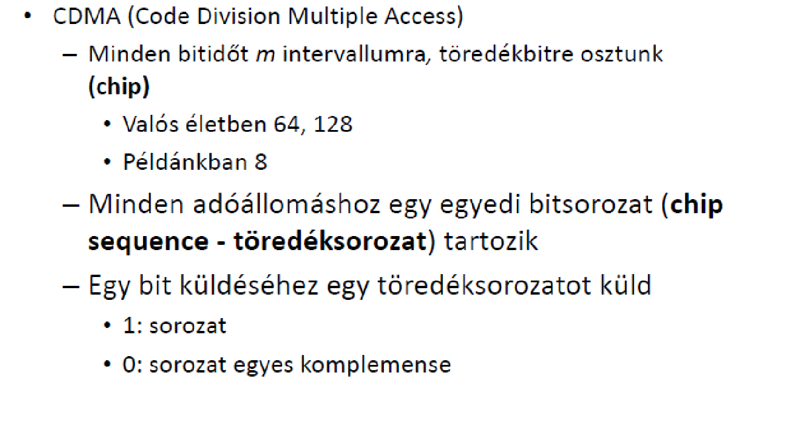 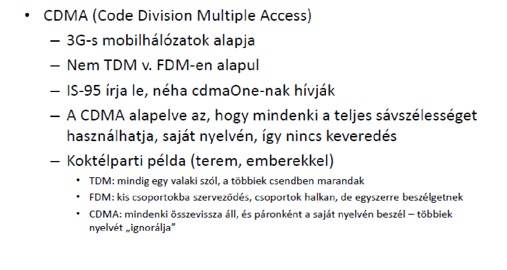A GSM az 1980-as években kelt életre, amikor egyetlen európai 2G-szabványt próbáltak kialakítani. A feladatot egy francia távközlési csoporthoz rendelték, amelynek a neve Group Specialé Mobile (GSM). Az első GSM-rendszerek telepítése 1991-ben kezdődött és gyors sikert ért el
A GSM és a többi, jövőben tanulmányozandó mobiltelefon-rendszer is megtartotta az 1G-rendszer cellaalapú kialakítását, a cellák közötti frekvencia-újrafelhasználást, valamint az átadással megvalósított mobilitást az előfizető mozgása során. Csak a részletek különböznek.
A 2.46. ábra mutatja, hogy a GSM-architektúra hasonló az AMPS-architektúrához, de az összetevők neve eltérő. A mobilkészülék maga két részre van osztva, a kézibeszélőre és egy kivehető chipre, amely előfizetői és számlainformációt tartalmaz.
Ezt a chipet SIM-kártyának hívják (Subscriber Identity Modul – előfizető-azonosító modul). A SIM-kártya aktiválja a készibeszélőt és tartalmazza azokat a titkos adatokat, amelyek lehetővé teszik, hogy a készülék és a hálózat azonosítsa egymást, és hogy a párbeszédet titkosítsák. A SIM-kártya kivehető és áthelyezhető másik kézibeszélőbe, hogy átváltoztassa azt a kézibeszélőt az előfizető hálózat szerinti mobiltelefonjává.
2.46. ábra - GSM mobilhálózati architektúra
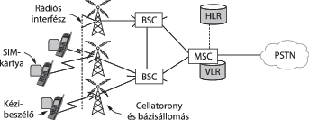A mobilkészülék a bázisállomással rádiós interfészen keresztül kommunikál, amelyet mindjárt ismertetünk. Minden cella-bázisállomás BSC-hez (Base Station Controller – bázisállomás-vezérlő) csatlakozik, amely vezérli a cellák rádió-erőforrásait, valamint kezeli a kézibeszélőt. A BSC MSC-hez csatlakozik (ahogy az AMPS-ben is), amely a hívásokat vezérli és csatlakozik a nyilvános kapcsolt telefonhálózathoz (Public Switched Telephone Network, PSTN).
A hívások vezérléséhez az MSC-nek tudnia kell, hogy a mobilkészülékek pillanatnyilag hol találhatók.
Az MSC egy adatbázist tart fenn az általa kezelt cellákhoz tartozó közeli mobilkészülékekről. Ezt az adatbázist VLR-nek (Visitor Location Register – látogató-elhelyezkedési regiszter) hívják.
A mobilhálózatban is található egy adatbázis, amely megadja az összes mobilkészülék utolsó ismert helyét. Ezt HLR-nek (Home Location Register – otthon-elhelyezkedésiregiszter) hívják. Ez az adatbázis vezérli a bejövő hívásokat a megfelelő helyre. Mindkét adatbázist
Most a rádiós interfészt írjuk le részletesen.
A GSM különböző frekvenciatartományokban működik világszerte, 900, 1800 és 1900 MHz-en. Több frekvenciasáv kerül lefoglalásra, mint ahogy az AMPS esetében is, több felhasználó támogatása érdekében. A GSM frekvenciaosztásos kettőzésű cellás rendszer, mint az AMPS is. Azaz minden mobilkészülék egy frekvencián ad, és egy másik, nagyobb frekvencián vesz. Egy frekvenciapár van felosztva időszeletekre időosztásos multiplexeléssel. Ily módon ezt több mobilkészülék osztja meg.
2.47. ábra - GSM, amely 124 frekvenciacsatornát használ, amelyek közül mindegyik egy 8 időszeletes TDM-rendszert használ
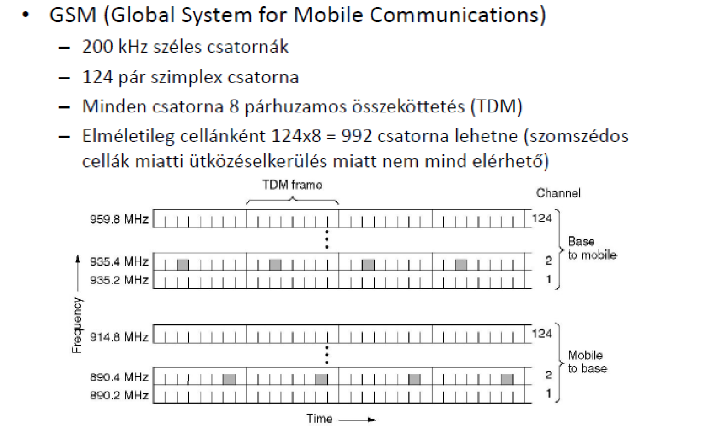 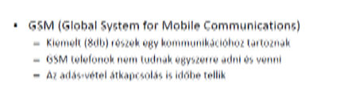 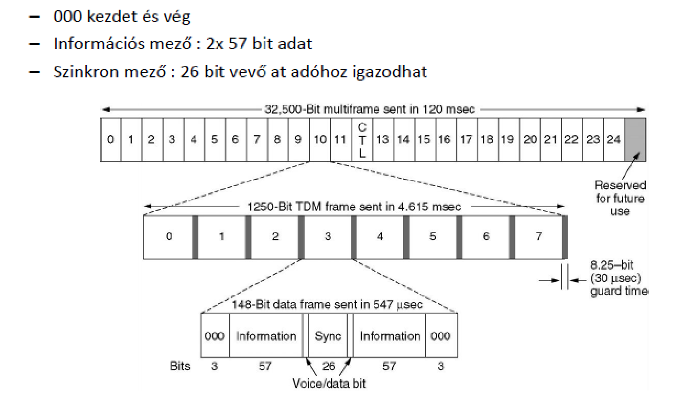GSM (Global System For Mible Communications)
-Időrés csoportok multikereteket alkotnak
-Egy időrés 148 adatbitet hordoz
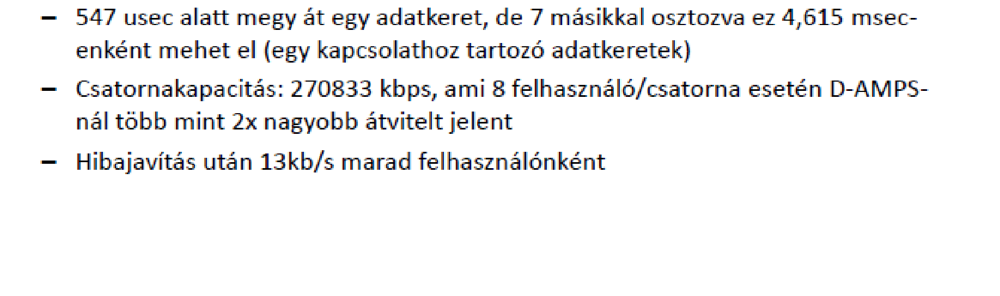A körözvény-vezérlési csatorna (broadcast control channel) egy, a bázisállomás által generált folytonos adatfolyam, amely a bázisállomás azonosítóját és a csatorna állapotinformációját tartalmazza. Az összes mobilállomás figyeli ennek a csatornának a jelszintjét annak megállapítására, hogy mikor léptek át egy újabb cellába.
A megkülönböztetett vezérlési csatorna (dedicated control channel) szolgál a helymeghatározás, a regisztráció, valamint a hívásfelépítés lebonyolításáraVégül van egy közös vezérlési csatorna (common control channel), amely három logikai alcsatornából tevődik össze.
Ezek közül az első a felhívási csatorna (paging channel), amelyen keresztül a bázisállomás jelzi a beérkező hívásokat. Az összes mobilállomás folyamatosan figyeli ezt a csatornát, olyan hívások után kutatva, amelyekre válaszolniuk kell.
A második a véletlen hozzáférésű csatorna (random access channel), amely lehetővé teszi a felhasználók számára azt, hogy időszeletet kérjenek a kijelölt vezérlési csatornán. A kijelölt vezérlési csatorna időszeletének felhasználásával az állomás egy hívást tud felépíteni.
Az így lefoglalt időszeletről értesítés a harmadik alcsatornán, a hozzáférés-engedélyező csatornán (access grant channel) érkezik az állomáshoz.
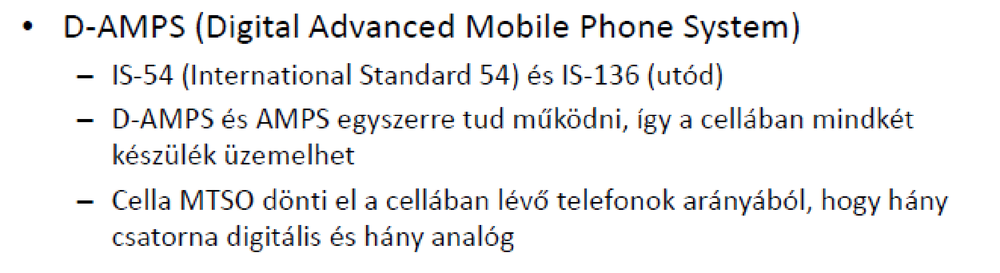 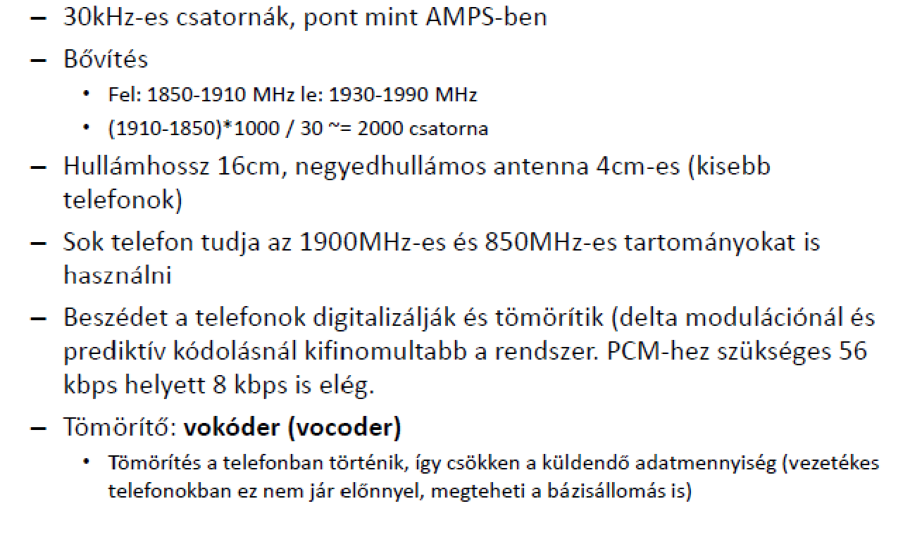 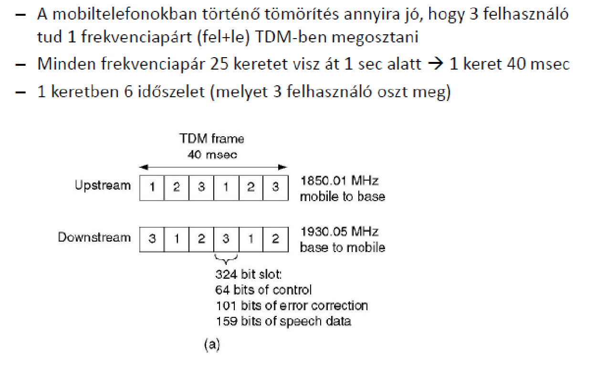 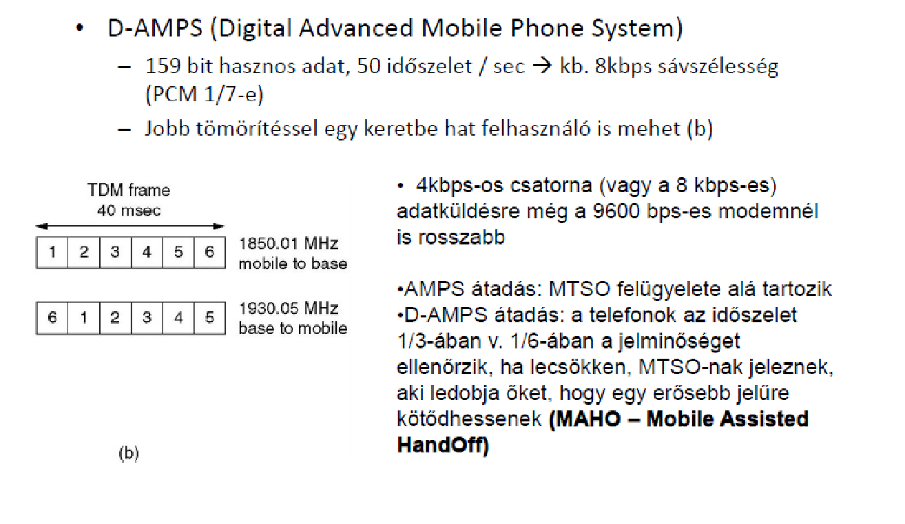A mobiltelefonok első generációja analóg, a második generációja pedig digitális beszédátvitellel működött. A harmadik generáció (vagy 3G) teljesen digitális beszéd- és adatátvitelt használ.
Több tényező is hajtja előre az ipart. Először is, a vezetékes hálózaton az adatforgalom mennyisége máris túllépte a beszédforgalomét, és továbbra is exponenciálisan nő, ezzel szemben a beszédforgalom lényegében változatlan. Sok ipari szakértő azt reméli, hogy az adatforgalom hamarosan átveszi a főszerepet a beszédtől a mozgó eszközökön is. Másodszor, a telefon-, szórakoztató- és számítástechnikai ipar mind digitális megoldásokra váltott, és gyorsan közelítenek egymáshoz. Sok ember kezd epekedni egy olyan könnyű, hordozható eszköz láttán, mint amilyen a telefon, a zenelejátszó, a videolejátszó, az e-levelezési terminál, a webinterfész, a játékgép és számos más eszköz, amely a világszerte használható, nagy sávszélességű vezeték nélküli internetkapcsolattal rendelkezik.
Az ITU már 1992-ben megpróbált kissé pontosítani ezen az álmon, és kiadott egy tervet az odajutáshoz, amelyet IMT-2000-nek neveztek el. Az IMT feloldása International Mobile Telecommunications (nemzetközi mobil telekommunikáció). Az IMT-2000 hálózat feltehetően a következő alapvető szolgáltatásokat kínálja a felhasználóinak:
1. kiváló minőségű beszédtovábbítás,
2. üzenetküldés (az e-levelezés, a fax, az SMS, a csevegés stb. kiváltására),
3. multimédia (zene lejátszása, mozgóképek, filmek, tv-adások stb. megjelenítése),
4. internet-hozzáférés (szörfölés a weben, a hangot és mozgóképet is tartalmazó oldalakat is ideértve).
A további szolgáltatások között előfordulhat a videokonferencia, a távoli jelenlét (telepresence), a csoportos játékok játszása és az m-kereskedelem (a fizetéshez majd csak meg kell lobogtatnunk a telefonunkat a bolt pénztáránál). Mindezeken túl az összes felsorolt szolgáltatás elvileg az egész világon azonnal (és bármikor) elérhető lesz (olyan helyeken, amelyeken nincs földi továbbítású hálózat, az eszközök automatikusan egy műholdas kapcsolatra váltanak), garantált szolgáltatásminőséggel.
Az ITU-nak azért célja, hogy az egész világ egy egységes IMT-2000 megoldást alkalmazzon, mert így a gyártóknak csak egyetlen eszközt kell építeniük, amelyet azután a világon bárhol eladhatnak, és amelyet a vásárlók is bárhol használni tudnak (hasonlóan a CD-lejátszókhoz és a számítógépekhez, de ellentétben a mobiltelefonokkal és a tévékkel). Az egységes műszaki megoldás a hálózatüzemeltetők életét is jelentősen megkönnyítené, és még több embert ösztönözne arra, hogy igénybe vegye a szolgáltatásaikat. Az üzletnek nem tesznek jót az olyan „formátumháborúk”, mint az a harc, amelyet a Betamax vívott a VHS-sel az első videolejátszók megjelenésekor.
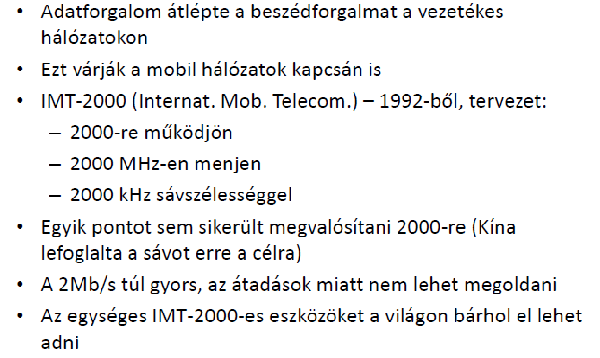 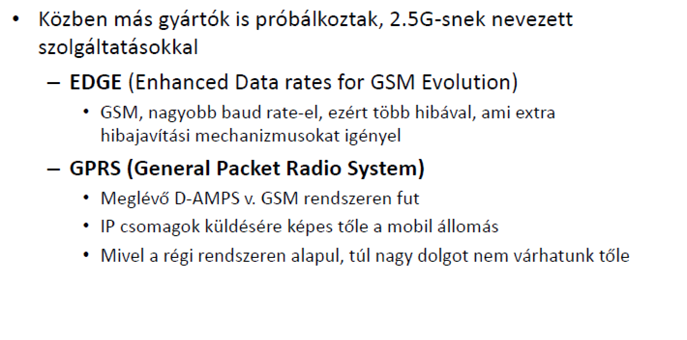 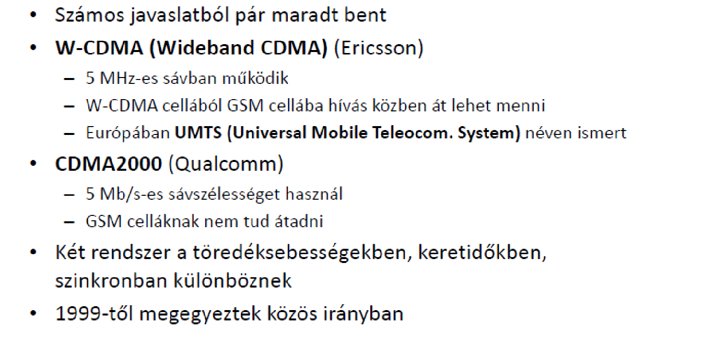Bár a 3G-hálózatok fejlesztése még nem fejeződött be, egyesek már kész megoldásnak tekintik. Ezek a kutatók már a 4G-rendszeren dolgoznak LTE (Long Term Evolution – hosszú távú fejlődés) néven.
LTE: 3G és 4G között, de inkább 3G. Sokkal gyorsabb, mint a 3G viszont nem éri el a 4G sztenderdet. Anno nagy újdonságnak számított. LTE-re képes telefon tudta kihasználni a többinek maradt a 3G
A 4G ajánlott szolgáltatásai közül néhány:
nagy sávszélesség, jelenlét mindenütt (csatlakozás bárhol), zökkenőmentes integráció más vezetékes és vezeték nélküli IP-hálózatokkal, a 802.11 hozzáférési pontokat is beleértve, adaptív erőforrás- és frekvenciamenedzsment, valamint kiváló minőségű szolgáltatás a multimédia számára.
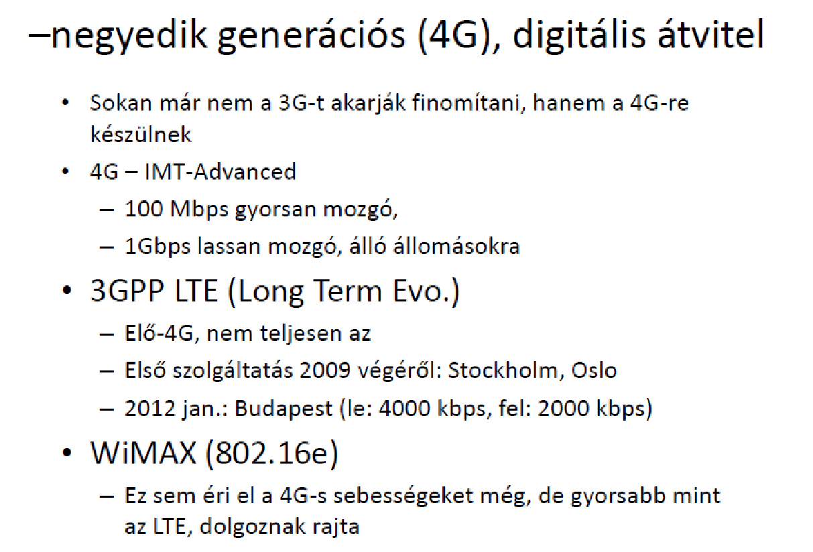